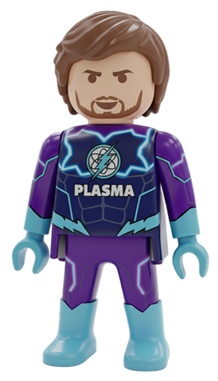

Joint PhD, Plasma Physics & Applications | 2020 – Present
University of Cyprus, Cyprus & University of Jaén, Spain
MSc, Physics (Photonics & Lasers) | 2016 – 2019
University of Patras, Greece
Thesis: "Elemental analysis of liquid metallurgical slag by laser-induced plasma technique (LIBS)"
BSc, Physics | 2007 – 2016
University of Patras, Greece

Research Fellow | Feb 2025 – Jun 2026
Department of Industrial Engineering, University of Bologna, Italy
Special Scientist & Teaching Assistant | Oct 2019 – Present
FOSS Research Centre & Dept. of ECE, University of Cyprus, Cyprus
A complete list of publications is available on my ORCID profile.